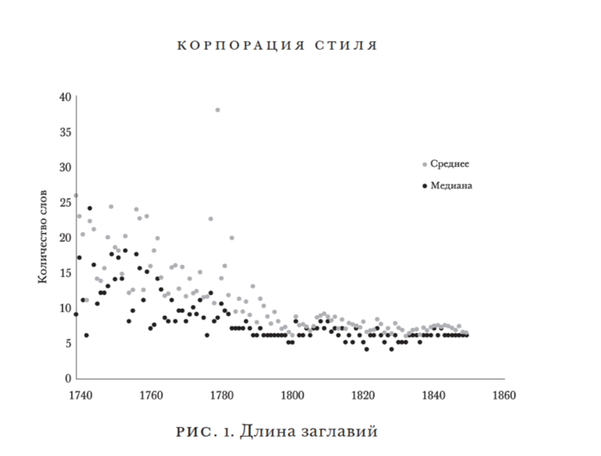
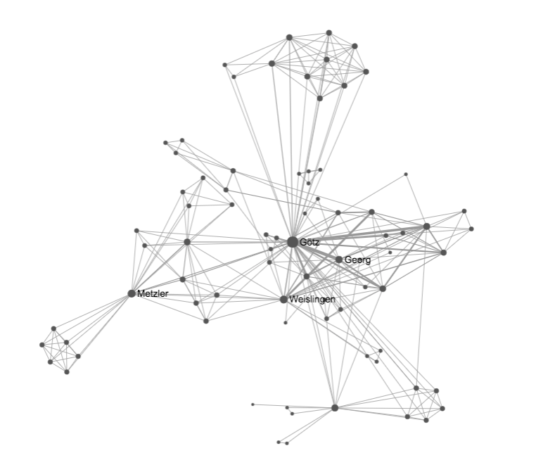
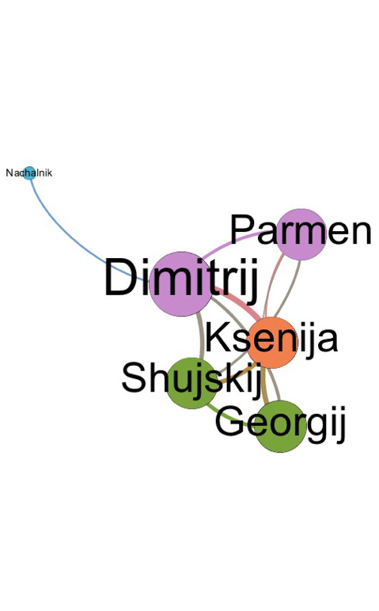

Distant Reading
where distance […] is a condition of knowledge (F. Moretti)
Зачем нужно это занятие?
- Вы познакомитесь с главным buzzword'ом мира DH
- Я в краткой форме расскажу вам основные идеи из книжки Франко Моретти про Distant Reading (возможно, самая известная и точно самая спорная книга в DH)
- Мы с вами мотивируем себя на количественные исследования текстов
План
- Distant Reading: с чего все началось
- Distant Reading => Digital Humanities
- Как выглядел Distant Reading у Моретти
- Современные исследования в парадигме Distant Reading
1. Distant Reading: с чего все началось
Моретти и мечты об исследовании "мировой литературы"
“I think it’s time we returned to that old ambition of Weltliteratur: after all, the literature around us is now unmistakably a planetary system. The question is not really what we should do — the question is how. What does it mean, studying world literature? How do we do it?”
Компаративистика Моретти не устроила
“comparative literature has not lived up to these beginnings. It’s been a much more modest intellectual enterprise, fundamentally limited to western Europe, and mostly revolving around the river Rhine (German philologists working on French literature). Not much more.”
Моретти хочет объять необъятное
I work on west European narrative between 1790 and 1930, and already feel like a charlatan outside of Britain or France. World literature?
Many people have read more and better than I have, of course, but still, we are talking of hundreds of languages and literatures here. Reading ‘more’ seems hardly to be the solution. Especially because we’ve just started rediscovering what Margaret Cohen calls the ‘great unread’. ‘I work on west European narrative, etc...’ Not really, I work on its canonical fraction, which is not even 1 per cent of published literature. ”
The Great Unread
("Великое непрочитанное")
«Life is so short! Even if you are a bookworm and only need five days to read a book twice, you will not manage to read more than 70 per annum. And for the 45 years of receptiveness, from age 15 to age 60, they sum up to only 3,150 books: these have to be chosen wisely!»
After we exclude serials, we can finally count all the books in the world. There are 129,864,880 of them. At least until Sunday.
Решение по Моретти: Distant Reading
“you invest so much in individual texts only if you think that very few of them really matter [...] At bottom, it’s a theological exercise—very solemn treatment of very few texts taken very seriously—whereas what we really need is a little pact with the devil: we know how to read texts, now let’s learn how not to read them. Distant reading: where distance, let me repeat it, is a condition of knowledge: it allows you to focus on units that are much smaller or much larger than the text: devices, themes, tropes—or genres and systems.”
Вопрос к читавшим: а что там про цифровые методы-то?
Поначалу Моретти не говорил о компьютерах!
“literary history will quickly become very different from what it is now: it will become ‘second hand’: a patchwork of other people’s research, without a single direct textual reading”
Адаптация идеи Distant Reading к цифровым методам в гуманитарных науках происходит позже
2. Distant Reading => Digital Humanities
“Literature scholars should stop reading books, and start counting, graphing, and mapping them instead.”
Литературоведы должны прекратить читать книги и начать считать, визуализировать и картографировать их
И понеслось
- Многие цифровые гуманитарии подхватили идею Distant Reading
- Тем более что вокруг цифровой бум 2.0 середины 2000-х
- Вокруг самого Моретти появилась Stanford Literary Lab
Книга 2013 г. уже воспринималась как книга по DH

Книга 2013 г. уже воспринималась как книга по DH... но не являлась таковой
- Глава 1. Европейская литература Нового времени: географический набросок
- Глава 2. Гипотезы о мировой литературе
- Глава 3. Литературная бойня
- Глава 4. Планета Голливуд
- Глава 5. Еще гипотезы
- Глава 6. Эволюция, миросистемы, Weltliteratur
- Глава 7. Конец начала: ответ Кристоферу Прендергасту
- Глава 8. Роман: история и теория
- Глава 9. Корпорация стиля: размышления о 7 тысячах заглавий (британские романы 1740–1850)
- Глава 10. Теория сетей, анализ сюжета
3. Как выглядел Distant Reading у Моретти
Гипотезы о мировой литературе
Гипотезы о мировой литературе
- Моретти задается вопросом, как изучать "мировую литературу"
- Литературные сверхдержавы ("центр") и их влияние на литературную "периферию"
- "Волны" мировой литературы и "деревья" национальных литератур
- Проблема масштаба — и великого непрочитанного (The Great Unread)
- Идея Дальнего чтения как возможное решение
«"Я занимаюсь западноевропейской прозой..." Это не совсем так, потому что я занимаюсь лишь канонизованной ее частью, которая составляет меньше 1 процента всей изданной литературы. Опять же, многие читали больше, но дело в том, что у нас есть 30 тысяч британских романов XIX в., или 40, 50, 60 тысяч — никто не знает точно, никто их не читал и никогда не будет читать. А ведь есть еще и французские романы, а также китайские, аргентинские, американские... Это хорошая мысль — читать «больше», но так мы не решим эту проблему».
Distant Reading без мысли о компьютере
"Меня заинтересовал тот факт, что одна и та же ситуация могла сложиться в таких разных культурах, как индийская и японская. Мне стало еще любопытнее, когда я понял, что Роберто Шварц самостоятельно открыл очень похожий принцип в случае с Бразилией. В итоге я начал использовать эти отрывочные факты в своих размышлениях о связи между рынками и формами и, сам того не замечая, стал воспринимать идею Джеймисона в качестве закона литературной эволюции (нужно быть предельно осторожным с заявлениями подобного рода, но даже не знаю, как выразиться иначе): в культурах, находящихся на периферии литературной системы (то есть почти во всех культурах как в Европе, так и за ее пределами) роман современного типа возникает не как самостоятельное изобретение, а как компромисс между западными формальными влияниями (как правило, французскими или английскими) и местным материалом".
Эта первоначальная идея разрослась, превратившись в небольшой набор законов, и все это было очень занятно, однако... она оставалась всего лишь идеей, гипотезой, которую еще нужно было проверить, по возможности на обширном материале, и поэтому я решил проследить за волной распространения современного романа (примерно с 1750 по 1950 г.) на страницах исследований по истории литературы.
Гасперетти и Гощило в работах о Восточной Европе конца XVIII в.; Тоски и Марти Лопес — о Южной Европе начала XIX в.; Франко и Соммер — о Латинской Америке середины XIX в.;Фриден — о еврейских романах 1860-х гг.; Мооса, Саид и Аллен — об арабских романах 1870-х гг.; Эвин и Парла — о турецких романах того же времени; Андерсон — о филиппинском «Не прикасайся ко мне» 1887 г.; Жао и Ван о прозе Империи Цин начала века; Обечина, Иреле и Куайсон — о западноафриканских романах 1920–1950-х гг. (и, конечно же, Каратани, Миёси, Мукерджи, Эвен-Зохар и Шварц). Четыре континента, 200 лет, более 20 независимых друг от друга литературоведческих исследований, и все они сходятся в следующем: когда определенная культура начинает двигаться в сторону романа современного типа, он обязательно оказывается компромиссом между заимствованными формами и местным материалом
Литературная бойня
Литературная бойня
- Как случилось так, что Конан Дойля читают все, а 99% детективов второй половины XIX века забыты?
- Есть ли здесь естественный отбор - и какие признаки обеспечивают "выживание сильнейшего"?
- Моретти со студентами ставит эксперимент по формализации улик в текстах
- «<...>если мы включим в сегодняшний канон британских романов XIX в. 200 названий (очень большое число), они составят всего лишь около 0,5 процента всех опубликованных тогда романов. А что остальные 99,5 процента? Это и есть вопрос этой статьи»
- «Литература как бойня. А мясники на ней — сами читатели, которые читают роман A (но не B, C, D, E, F, G, H ...) и так поддерживают жизнь А в следующем поколении»
«<...>почему Конан Дойла выбирают в первую очередь? Почему именно его, а не других? Это мертвая зона экономической модели: событие, запускающее «информационный каскад», непознаваемо. Оно там, оно должно быть там, или рынок не будет вести себя так, как ведет, но это не может быть объяснено. Зрители «открывают, что им нравится», но мы никогда не откроем, почему им это нравится. Они — слепые создатели канона, каким бы он ни был».
- Улики есть
- Улики имеют связь с разгадкой
- Улики упоминаются по ходу действия, а не только в конце
- Читатель сопсобен дешифровать улики раньше развязки
Конан Дойл наткнулся на улики, когда работал над совершенно другой задачей — мифом о Шерлоке Холмсе. Задумайтесь над начальными сценами «Приключений...», когда Холмс «читает» всю жизнь по знакам на теле клиента. Конан Дойл хочет от улик, чтобы они работали на поддержание всеведения Холмса. Они — функция Холмса, его атрибут, подобно кокаину и скрипке. Когда Конан Дойл начинает «играть» с уликами и в итоге превращает их из простого орнамента в механизм решения головоломки, он находит им новое применение
Когда мы впервые посмотрели на эти результаты на семинаре, мы с трудом могли в них поверить. Конан Дойл так часто прав — и вдруг теряет хватку в самый последний момент? Он находит эпохальный формальный прием, но не разрабатывает его? [...] в моменты морфологических изменений, какими 1890-е гг. были для детектива, конкретный писатель ведет себя так же, как и жанр в целом: нерешительно. В момент смены парадигмы никто не знает, что сработает, а что нет, — ни Эшдаун, ни Пэркис, ни Конан Дойл; он продолжал писать методом проб и ошибок
Планета Голливуд
Планета Голливуд
- Одинаково ли распространяются по миру голливудские фильмы?
- Моретти говорит, что боевики распространяются легко, комедии — тяжело
- Связывает это с тем, что боевик менее связан с языком
«Планета Голливуд» задумывалась как короткий текст, и анализ в ней не очень глубокий. Однако очевидная асимметрия между двумя тенденциями — боевики, распространявшиеся повсюду, и комедии, почти никуда не распространявшиеся, — привлекла мое внимание. В этой статье я объясняю такое различие, с одной стороны, преобладанием сюжета (боевик), а с другой — преобладанием языка (комедия), что является правдой и, по сути, не таким уж и большим открытием: нарратологи уже давно определили, что рассказ состоит из двух отдельных уровней — рассказа и стиля. Однако новизна состоит в прозрачности эмпирического доказательства: сюжет и стиль очевидным образом разделяются в результате перемещения в пространстве (или же отсутствия такового)».
Корпорация стиля
«Основная метаморфоза названий XVIII в. проста: за время жизни двух поколений они становятся намного короче».
А как выглядели длинные?
"Письмо от Х—г—г, эсквайра, одного из лордов опочивальни, к молодому шевалье и единственному человеку из его свиты, сопровождавшему его во время долгого путешествия от Авиньона по Германии и другим местам; содержит множество замечательных и чувствительных происшествий, случившихся с П — в его таинственном странствии. Близкому другу."
(A letter from H—g—g, Esq; One of the Gentlemen of the Bedchamber to the Young Chevalier, And the Only Person of his Retinue that attended him from Avignon, in his late Journey through Germany, and elsewhere)

«Сегодня это звучит странно, но на самом деле краткий пересказ в начале романа имеет смысл: роман — это повествование, а заглавие (в случае с титульным листом можно понять, зачем книге требовалась целая страница для титула) в качестве пересказа было укороченным повествованием — оно представляло основные события истории, персонажей, место действия, концовку. Это имело смысл».
«<...> культурная экосистема изменялась таким образом, что становилась несовместимой с этими принципами: на протяжении XVIII в. количество опубликованных романов в Британии существенно выросло <...>»
«В третьей и особенно в четвертой четверти XVIII в. Monthly и другие журналы стали печатать рецензии на многочисленные новые романы, что сделало заглавия-пересказы в некотором смысле избыточными <...>»
«Кроме того, поскольку количество новых романов продолжало расти, временное окно для представления каждого из них на рынке сузилось, и для названия стало жизненно необходимым быстро и эффективно привлекать внимание публики. Пересказы не были для этого приспособлены. Они хорошо описывали книгу саму по себе, однако, когда дело касалось переполненного рынка, короткие заглавия справлялись лучше — хотя бы потому, что их было легче запомнить».
Корпорация стиля: лингвистические особенности заглавий
1. Заглавия с прилагательными и без
«Никакой» вампир против неприличной жены
«<...>оказалось, что прилагательное вовсе не уточняет семантическое поле, оно его трансформирует. В комбинации артикль-существительное половина заглавий, описывающих социальный тип, относится к экзотическому трансгрессивному полю — «Факир», «Вампир», «Пожиратель огня»
«Однако стоит только появиться прилагательному, соотношение оказывается прямо противоположным (рис.11): факиры и распутники падают с 50 до 20%, а жены и дочери поднимаются с 16 до 40%: «Неприличная жена», «Брошенная дочь», «Неверный отец», «Братья-соперники», «Посмертно рожденная дочь», «Ложный друг», «Безумный отец»
«Без прилагательных мы находимся в мире приключений, а с прилагательными — в нарушенном домашнем укладе. <...> если в названии присутствует только существительное, то это существительное должно гарантировать интересную историю само по себе, и вампиры, и отцеубийцы в этом случае являются хорошим выбором. Однако когда появляется прилагательное, то даже хорошо знакомые фигуры могут стать чуждыми, превратившись в неверных отцов и посмертно рожденных дочерей».
2. Женщины в заглавиях обретают фамилии

«<...>героиня приобретала общественное положение, сразу отражающееся в названиях вроде «Джейн Эйр» или «Мэри Бартон». Обратите внимание, как много может быть сделано в коротких заглавиях благодаря небольшим вариациям: одно слово — и образ героини переворачивается на 180 градусов: от частного к публичному. Короткие названия были ограничением, навязанным рынком, да, но ограничение могло также стать замечательной возможностью для литературного воображения: искусство намека, сжатости — в конце концов заглавие становилось тропом».
3. The X of Y
Примеры исследований в парадигме Distant Reading
Канон против "архива" (неканона)

Вдохновение: карта французской литературы П. Бурдье
Основательный подход к сборке репрезентативной выборки
"Though our corpus was twenty times larger than the traditional canon, then, it was perfectly possible that its principle of selection would make it resemble the canon much more than the archive as a whole. That was the problem. To complicate matters further, different genres have different canon-to-archive ratios: whereas epistolary and silver-fork novels have relatively large archives and small canons, the opposite is true of the industrial novel and the Bildungsroman, both of which attracted many major Victorian writers".
C выборкой оказалось сложно
"this was a search involving many excellent librarians in London, Cambridge, Los Angeles, and of course at Stanford; a half dozen researchers at the Literary Lab; plus people at Hathi, Gale, and so on. The books we were looking for were only two centuries old; they had had print runs of at least 750-1,000 copies, and in a part of the world which, at the time, already possessed efficient libraries. The Literary Lab has some money for research [...] . And yet it took about six months to receive from Hathi and Gale the set of texts that should have allowed us to move from the initial 30%, to around 70-80% of the random sample".
"Clearly, the idea that digitization has made everything available and cheap – let alone “free” – is a myth".
Но они продолжили, потому что:
"Dirty hands are better than empty".
Избыточность (предсказуемость) текста:
Возможно, авторы, вошедшие в канон, писали менее предсказуемые тексты (на уровне выбора слов)
Разнообразие вокабуляра:
Возможно, авторы, вошедшие в канон, писали менее предсказуемые тексты (на уровне выбора слов), используя при этом меньше разных слов!
465 немецких пьес

Смотрим на социальные сети пьес с высоты

Смотрим на социальные сети пьес с высоты

Гёте и Шекспир

Теперь смотрим на русский корпус

Это Борис Годунов А.С. Пушкина! (опять)

Что-то похожее на Гёте
"Не смущаемый никаким иным влиянием, Шекспиру я подражал в его вольном и широком изображении характеров, в небрежном и простом составлении планов…"
"Твердо уверенный, что устарелые формы нашего театра требуют преобразования, я расположил свою трагедию по системе Отца нашего Шекспира, и принес ему в жертву пред его алтарь два классические единства, и едва сохранил последнее".
Классицизм против "шекспировской пьесы": взгляд через сети

Через что характеризуют мужчин и женщин

чем выше линия — тем более "о мужчинах" это слово в литературе
Подсчеты слов в 50 тысяч романов